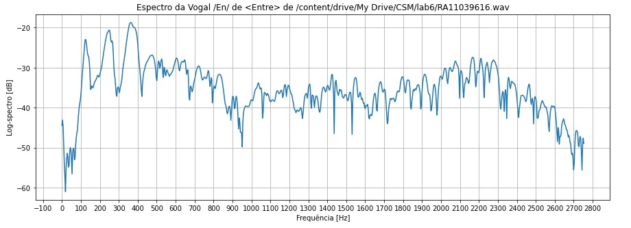
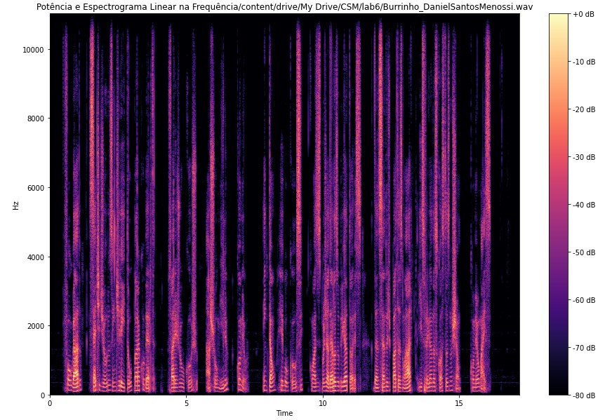

Dígitos
Contorno de energia, espectograma, pitch, f0 e formantes para a vogal /Um/ do áudio com os dígitos do RA.
- Pitch: 2,5ms;
- Fundamental (f0): 250Hz;
- Formante f1: ~120Hz;
- Formante f2: ~250Hz;
- Formante f3: ~360Hz;
- Formante f4: ~480Hz;

Voz falada
Contorno de energia, espectograma, pitch, f0 e formantes para a vogal /Ol/ da palavra "folgado" (trecho Burrinho da P2a).
- Pitch: 1,8ms;
- Fundamental (f0): ~555,6Hz;
- Formante f1: ~130Hz;
- Formante f2: ~280Hz;
- Formante f3: ~410Hz;
- Formante f4: ~560Hz;

Poema
Contorno de energia, espectograma, pitch, f0 e formantes para a vogal /Am/ de "campos". (trecho do poema de Camoes da P2a).
- Pitch: 1,9ms;
- Fundamental (f0): 526,3Hz;
- Formante f1: ~150Hz;
- Formante f2: ~290Hz;
- Formante f3: ~410Hz;
- Formante f4: ~560Hz;

Consoantes Plosivas
Trecho do espectrograma que contém a consoante /t/ da palavra 'Então', retirada do treco do Burrinho Pedrês.